Directories
Overview
CakeFS provides CakeDir objects that offer a comprehensive and ergonomic interface for directory traversal and other common directory IO operations. Just like CakeFile objects, CakeDir objects store their paths using CakePath objects. In addition to their path, however, CakeDir objects also store a collection of CakeFileExt objects, called the file extension filter, which can be used to selectively visit the files contained in a directory.
Source Code Information
FCakeDir is defined in CakeIO/CakeDir.h.
All of the following C++ examples will assume this has already been included.
Basic Usage
Constructing CakeDir Objects
The simplest way to construct an FCakeDir is to submit a string or an FCakePath that represents the directory path we want to use.
If we know we are going to use this directory for filtered traversals, we can set its initial file extension filter by providing a file extension filter. In the following examples, our directory will hold the path X:/game and its file extension filter will holds two extensions: .txt and .bin.
FCakeExtFilterQuery Query{ TEXT("txt | bin") };
FCakeDir DirectoryViaString{ TEXTVIEW("X:/game"), Query };
FCakeDir DirectoryViaPath{
FCakePath{ TEXTVIEW("X:/game") }, Query
};
If you are not using a cached query and don't want to pay the cost of creating one for just one directory, you can use the special constructor overload which takes an FCakePath and an FStringView for the query instead:
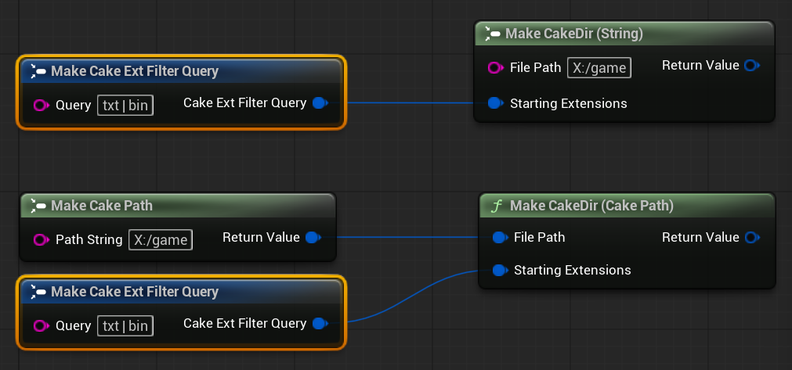
We can get a copy of an existing CakeDir via Clone:
FCakeDir DirectoryGame{ FCakePath{TEXTVIEW("X:/game")}, TEXTVIEW("bin | dat") };
// Path: "x/game"
// File Extension Filter: [.bin, .dat]
FCakeDir GameCloned{ DirectoryGame.Clone() };
// Path: "x/game"
// File Extension Filter: [.bin, .dat]
FCakeDir DirectoryGame{ FCakePath{TEXTVIEW("X:/game")}, TEXTVIEW("bin | dat") };
// Path: "x/game"
// File Extension Filter: [.bin, .dat]
FCakeDir ClonedWithoutExtFilter{
DirectoryGame.Clone(ECakePolicyExtFilterClone::DoNotCloneFilter)};
// Path: "x/game"
// File Extension Filter: []
Tip
In general, Clone functions in CakeFS behave identically to copy constructors. However, FCakeDir's Clone function is an exception since it provides more control than its copy constructor counterpart.
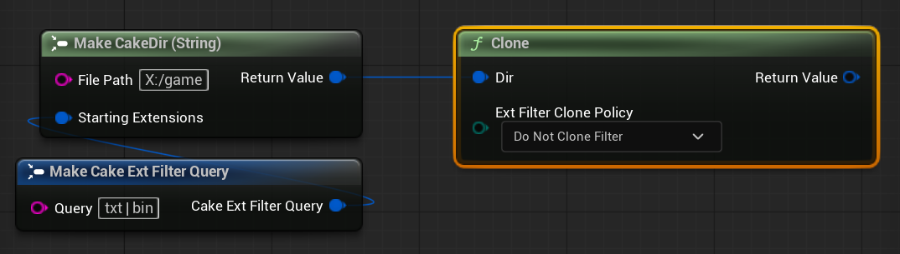
By default, this function will also ensure that the cloned CakeDir has an identical file extension filter. We can control this directly via the ExtFilterClone parameter. This parameter is optional in C++.
Accessing the Directory Path
We can access a CakeDir's associated CakePath via GetPath.
auto PrintPath = [](const FCakePath& Path) {
UE_LOG(LogTemp, Warning, TEXT("Path: [%s]"), **Path);
};
FCakeDir DirectoryGame{ FCakePath{TEXTVIEW("X:/game")}, TEXTVIEW("bin | dat") };
PrintPath(DirectoryGame.GetPath());
PrintPath(*DirectoryGame);
Note
operator* is overloaded to be equivalent to calling GetPath.
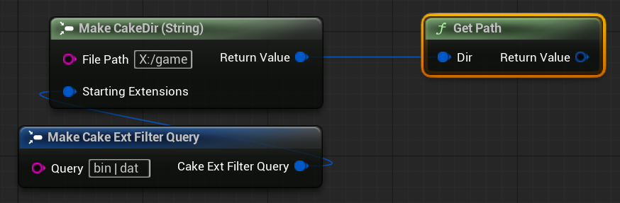
When we just want to use the directory path as a string, we can use the convenience function GetPathString:
Modifying the Directory Path
To change the path of an existing CakeDir object, we use SetPath. There are two versions of SetPath we can use: one that accepts a string and one that accepts a CakePath object.
// FString Overload
FCakeDir DirectoryGame{ FCakePath{TEXTVIEW("X:/game")}, TEXTVIEW("bin | dat") };
DirectoryGame.SetPath(TEXTVIEW("y/archive/data"));
// FCakePath Overload
FCakeDir DirectoryGame{ FCakePath{TEXTVIEW("X:/game")}, TEXTVIEW("bin | dat") };
FCakePath NewPath{ TEXTVIEW("y/archive/data") };
DirectoryGame.SetPath(NewPath);
Tip
We can use StealPath in C++ that accepts an FCakePath&& parameter when the situation can allow for it.
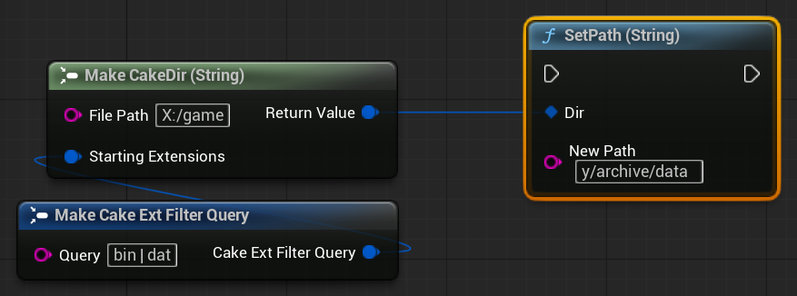
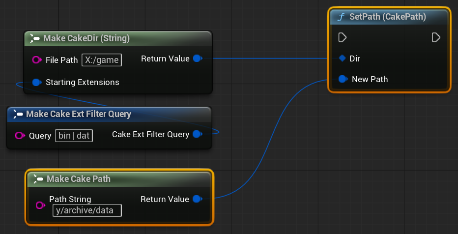
We can check if an FCakeDir's directory path is empty via PathIsEmpty:
We can reset the directory path to be empty via ResetPath:
Note
This function takes an optional int32 parameter NewReservedSize which will be forwarded to the path's internal FString member. You can use this to reserve a size for the path string buffer, just as you would with FString.
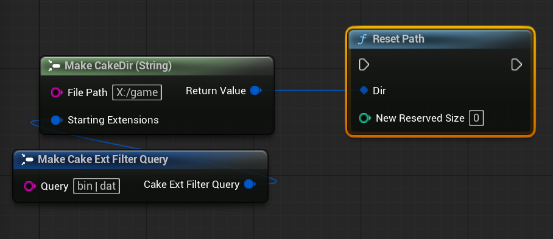
Note
The parameter NewReservedSize can be used to reserve a minimum size for the internal path string. It is optional and should be left at 0 whenever you don't need to specify a reserve size.
Accessing the Directory Name
We can get the directory name as a string via CloneDirName:
Warning
The result of this function can be empty, so be sure to check in situations where it matters!
Directory Equality
Directory equality mirrors path equality: two CakeDir objects are equal if they refer to the same directory location on the filesystem. The extension filters are not taken into consideration for equality since this would lead to unintuitive, misleading results.
We use the equality operators == and != to compare FCakeDir objects.
FCakePath PathData{ TEXTVIEW("X:/game/data") };
FCakeDir DirData{ PathData };
FCakeDir DirArc { FCakePath{TEXTVIEW("X:/arc")} };
bool bAreEqual{ false };
bAreEqual = DirData == PathData; // => true
bAreEqual = DirData == DirArc; // => false
bAreEqual = DirData != PathData; // => false
bAreEqual = DirData != DirArc; // => true
Note
The FCakeDir / FCakePath overload is also provided for convenience.
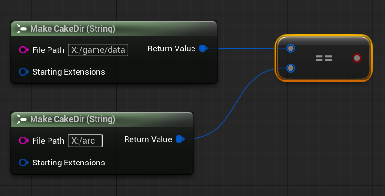

File Extension Filter
Each CakeDir object stores a list of unique file extensions that are used for filtered traversals. We will look at how we can interact with the file extension filter soon, but first we need to take a brief detour and become familiar with file extension query syntax.
File Extension Query Syntax
CakeDir filters use a specific syntax to represent groups of file extensions as a string. The syntax is very simple: each file extension element is separated via the | (pipe) character.
As an example, if we wanted to use the extensions .txt, .bin.dat, and .jpg in the same command, we could use the string "txt|bin.dat|jpg" for the extension command. Any leading or trailing whitespace is removed from each element, so we can also use the string "txt | bin.dat | jpg" to enhance the readability.
Note
It does not matter if we include the leading extension dot for an extension.
We use a special type to contain these file extensions queries: FCakeExtFilterQuery. Making a query is simple: we just need to construct it with our desired query string:
In the example above, the filter query will contain the following extensions: .jpg, .jpeg, and .png.
Tip
Adding surrounding whitespace to | extension separator can help boost legibility, especially in Blueprints. Any leading/trailing whitespace is always removed from each entry, so use whatever format is most legible for you and your team.
Info
The extension filter is extremely lenient when parsing file extension queries. It doesn't matter if we include the leader dot in an extension (".txt" and "txt" are equivalent, as are ".cdr.txt" and "cdr.txt"), It can also handle redundant | or . symbols and empty entries without incident (it will merely skip them). For example, |.|..cdr.|txt|bin|| will correctly parse the command into the following extension list [.cdr, .txt, .bin]. Therefore, you do not have to do exhaustive syntax checking when accepting filter query strings from outside sources (like from a GUI).
File Extension Filter Initialization
When we construct a CakeDir object, by default the file extension filter is completely empty. If we know at construction time what kind of files the CakeDir object is going to be working with, we can directly set the filter by providing an FCakeExtFilterQuery argument, as shown in the construction section.
Modifying the File Extension Filter
We can submit file extensions queries to add, remove, or directly set the contents of the File Extension Filter. All of these functions return an integer indicating the number of changes that were made to the file extension filter.
ExtFilterSetExtensions will remove any preexisting file extensions from the filter and set its contents to the file extensions in the query argument. The number returned indicates the total number of extensions in the filter after it has been modified.
FCakeDir DataDir{ TEXTVIEW("Z:/Vault/Data") };
//FCakeExtFilterQuery overload
FCakeExtFilterQuery NewExts{ .Query = TEXT("bin | dat") };
DataDir.ExtFilterSetExtensions(NewExts); // => 2 (bin, dat)
Note
All functions modifying the CakeDir's filter set have overloads that support FStringView so that callers can avoid creating an unnecessary query object when desired.
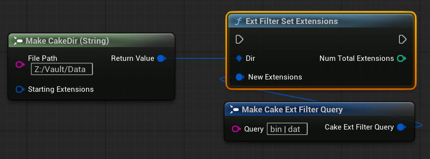
In the example above, the function will return 2 and the file extension filter will contain two file extensions: [ ".bin", ".dat" ].
ExtFilterAddExtensions will add any new file extensions found in the submitted query. It will return the number of new extensions added. Remember, the file extension filter only stores unique entries, so sometimes this number returned will be different from the number of file extensions found in the query.
FCakeExtFilterQuery InitialExts{ .Query = TEXT("bin | dat") };
FCakeDir DataDir{ TEXTVIEW("Z:/Vault/Data"), InitialExts };
//FCakeExtFilterQuery overload
FCakeExtFilterQuery AdditionalExts{ .Query = TEXT("sav | json") };
DataDir.ExtFilterAddExtensions(AdditionalExts); // => 2 (bin, dat, sav, json)
Note
All functions modifying the CakeDir's filter set have overloads that support FStringView so that callers can avoid creating an unnecessary query object when desired.
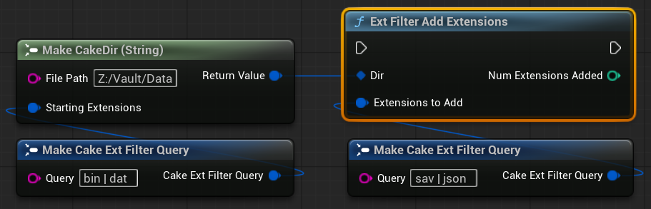
In the example above, the function will return 2 and the file extension filter will contain four file extensions: [ ".bin", ".dat", ".sav", and ".json" ].
ExtFilterRemoveExtensions will remove any queried file extensions from the filter set. It will return the number of extensions removed.
FCakeExtFilterQuery InitialExts{ .Query = TEXT("bin | dat") };
FCakeDir DataDir{ TEXTVIEW("Z:/Vault/Data"), InitialExts };
//FCakeExtFilterQuery overload
FCakeExtFilterQuery ExtsToRemove{ .Query = TEXT("bin | json") };
DataDir.ExtFilterAddExtensions(ExtsToRemove); // => 1 (dat)
Note
All functions modifying the CakeDir's filter set have overloads that support FStringView so that callers can avoid creating an unnecessary query object when desired.
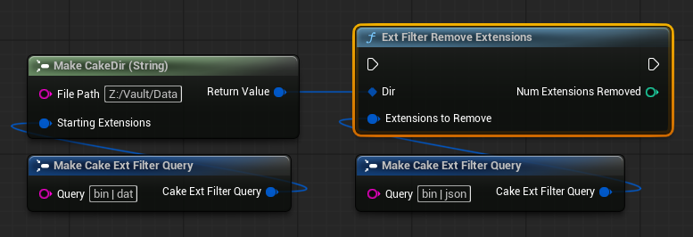
In the example above, the function will return 1 and the file extension filter will contain one file extension: [ ".dat" ].
Clearing All Data
To clear the path and the file extension filter on a CakeDir object, we use Reset.
Note
There are two optional integer parameters which allow us to reserve sizes for the path string and the file extension filter; in most scenarios you can leave this at zero. However, if you happen to know the size of the path or how many file extensions you will be storing after the reset, reserving the size can increase performance.
Filesystem Operations
Warning
The following filesystem operation examples show only minimal error handling; this is to keep the focus on core object usage and reduce the complexity of the example code. While there is nothing inherently wrong with this minimal error handling style, do not view it as a recommendation! See Error Handling for a detailed examination of error types and error handling strategies.
Note
The following section involves the use of various Cake Policy enums. If you are unfamiliar with a policy, please refer to the Policies section for a detailed introduction to each policy.
Checking Directory Existence
To check if a CakeDir object's referenced directory exists on the filesystem, we use Exists:

Creating Directories
To create the directory a CakeDir object references, we use CreateDir:
We can use the MissingParents parameter to control whether any missing parent directories in the CakeDir's directory path are allowed to be created. (This parameter is optional in C++).
Tip
CreateDir returns a NoOp if the directory already exists. In situations where you don't know if a directory exists but you want to ensure it's created before continuing, you can just call CreateDir and use the bool / IsOk to know whether or not the directory exists.
Deleting Directories
We can delete a CakeDir's referenced directory and all of its contents via DeleteDir:
Tip
DeleteDir returns a NoOp if the directory does not exist, so we can safely use DeleteDir without checking for directory existence just check the result's IsOk to ensure that the directory does not exist.
Copying Directories
To copy a CakeDir's directory to another location on the filesystem, use CopyDir, which takes a CakePath argument specifying where the source directory should be copied:
We can give the copied directory a new name easily via CopyDirWithNewName. In addition to a destination path, we also need to provide a new name that the copied directory should have:
Assuming the copy succeeds, the copied directory's path would be Z:/archive/game_archive.
Moving Directories
To move a CakeDir's directory to another location on the filesystem, use MoveDir, which takes a CakePath argument specifying where the source directory should be moved:
We can give the moved directory a new name easily via MoveDirWithNewName. In addition to a destination path, we also need to provide a new name that the moved directory should have:
Assuming the move succeeds, the moved directory's path would be Z:/archive/game_archive.
Understanding Copy / Move Overwrite behavior
When moving or copying directories to a new location on the filesystem, it's important to understand what happens when the destination directory already exists and contains files and subdirectories. First of all, it is important to understand that the copy or move operations offered by CakeDir objects will merge into preexisting directories. This means that any files or subdirectories in the destination directory that do not share names with files in the copied directory will be left entirely untouched. During a copy operation, subdirectories are only created if they do not already exist; otherwise, they are left alone. The OverwriteItems policy parameter involved in a directory copy or move will resolve any remaining clashes between files -- if a file shares the same relative path in both the destination and the source directory, then it will be overwritten with the source directory's file if overwriting is allowed, or the file will be skipped otherwise.
Let's look at a couple of examples to solidify our understanding.
We'll start off with an easy example, the situation where the destination directory does not contain any content that will be merged:
If we want to copy the Models directory into the Game directory, then the final destination path will be Game/Models. The Game directory has no Models directory, and so the copy will proceed without encountering any overwriting scenarios. After the copy operation is successful, our destination directory looks like this:
Destination Directory (After Copy)
Game
Data
Tables
Models
Characters
elf.fbx
Enemies
orc.fbx
goblin.fbx
Now let's look at a scenario that involves overwriting. This time our Game directory has a Models folder, and it also has a Characters/elf.fbx file. It also has some new files and another subdirectory:
Destination Directory (Before Copy)
Game
Data
Tables
Models
Characters
elf.fbx [Overwrite Collision]
elf-archer.fbx
elf-mage.fbx
Special
health-potion.fbx
The source directory we wish to copy has the same form:
Now if we wish to copyModels into Game again, the copy operation will encounter a collision when it attempts to copy over elf.fbx. How that collision is resolved depends on the value of the
OverwriteItems
argument we send in. If we allow overwriting, then the source directory's elf.fbx will be copied over. If we disallow overwriting, then the source directory's elf.fbx file will be skipped and the destination directory's version of elf.fbx will be preserved.
After the copy operation has resolved, our Game directory now looks like this:
Destination Directory (Before Copy)
Game
Data
Tables
Models
Characters
elf.fbx
elf-archer.fbx
elf-mage.fbx
Enemies
orc.fbx
goblin.fbx
Special
health-potion.fbx
As we can see, the two versions of the Models directory have merged. Any overwrite collsions have been resolved via the rule set by the
OverwriteItems
argument, and the final Models directory contains the source directory's content as well as the extra files and subdirectories not contained in the source directory.
Tip
If you want a copy to replace its destination directory rather than merge with it, you will first need to ensure that the destination directory is deleted prior to the copy or move.
Changing Directory Name
To change the name of a directory on the filesystem, use ChangeDirName:
Assuming the name change succeeds, the new directory path will be X:/game_main.
The OverwriteItems parameter allows us to control whether the change name operation should continue if doing so would overwrite a preexisting directory.
Retrieving Directory OS Stat Information
We can get the stat data for a CakeDir's referenced directory via QueryStatData. It is imperative that callers check to ensure the query operation succeeded before using any of the fields in the stat data -- they will be incorrect / invalid unless the operation succeeded.
FCakeDir DirectoryGame{ TEXTVIEW("X:/game") };
TCakeOrderDir<FFileStatData> DirStatOpt{
DirectoryGame.QueryStatData()
};
if (DirStatOpt.IsValid())
{
FFileStatData& DirStat = *DirStatOpt;
bool bIsDir = DirStat.bIsDirectory; // => true
FDateTime CreationTimestamp = DirStat.CreationTime;
// ...
}
QueryStatData will return a TCakeOrderDir<FFileStatData> that holds both the FCakeResultDirIO and the FFileStatData, which will be valid only if the query operation doesn't fail. For more information about TCakeOrder types and their usage, see this section.
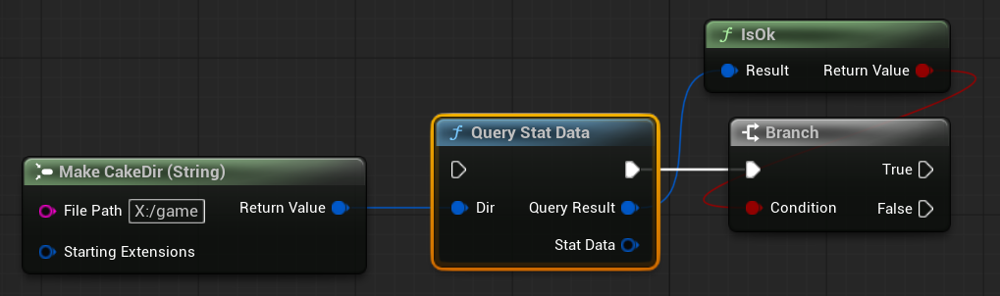
This returns a CakeFileStatData object. Please note that some of the fields only apply to files, such as file size. They will not hold meaningful values even when the stat data is successfully retrieved for a directory.

Directory Traversal
Directory traversal is a vital part of working with file systems, and CakeDir objects offer a comprehensive set of traversal interfaces. At its core, a traversal operation involves invoking a user-supplied callback function on each directory element (file or subdirectory) that is being visited by the traversal function.
Traversal Overview
Before we examine the traversal interfaces, it is important to understand some terminology and guiding principles behind CakeFS's traversal design. A traversal has three main traits that define its behavior:
- Style: Determines the functional behavior of the traversal operation.
- Target: Determines what kind of element (directories, files, or both) will be visited by a traversal operation.
- Depth: Determines if a traversal is allowed to continue down into children subdirectories.
Each of these traits is independent of one another, and so they can be freely mixed in any combination the caller needs. Now, let's look a bit more in depth into each of the traits.
Traversal Depth
Traversal depth is controlled via the OpDepth parameter. Full details about each setting can be found in its documentation.
Traversal Targets
There are three targets a caller can select for a traversal operation to visit at the specified depth: items will visit all files and directories, files will visit only files, and subdirectories will only visit subdirectories. The callback signature for traversals will change based on the target selected. For each target element visited, an items traversal will produce a CakePath object and a boolean indicating if it is a directory, a files traversal will produce a CakeFile object, and a subdirectory traversal will produce a CakeDir object.
Traversal Styles
There are three styles of traversal that are offered by CakeFS, listed from simplest to the most advanced: unguarded, guarded, and search traversals.
An unguarded traversal will visit every target element at the specified depth. The caller has no ability to terminate the traversal early. In essence, this is traversal with no error handling.
A guarded traversal will attempt to visit every target element at a specified depth, but it can be stopped early by the caller if an error is encountered. In essence, this is traversal with error handling enabled.
A search traversal will visit target elements at the specified depth until a caller-defined condition is met or an error is encountered. As the name implies, a search traversal does not always expect to visit every target element within a directory -- it wishes to terminate as soon as it finds what it is looking for. Search traversals can be terminated early in two states -- if an error is encountered or if the search has found what it needs. If a search traversal visits all target elements and the search is not satisfied, then this traversal will be considered a failed search.
Traversal Function Naming
Traversal functions utilize the following naming pattern: Traverse<style>?<target>. Unguarded traversals do not have a style identifier in their name because they are the simplest form. Let's say we wish to traverse the files of a directory. We could use the following functions to traverse the files with each style:
- Unguarded Traversal:
TraverseFiles - Guarded Traversal:
TraverseGuardedFiles - Search Traversal:
TraverseSearchFiles
Traversal Callbacks
Every traversal function will require a callback that is meant to handle each target element that is visited. The signature is based upon two factors: the return type of the callback is determined by the traversal style, and the parameter list is determined by the target element.
Return Types
| Traversal Style | Return Type |
|---|---|
| Unguarded | void |
| Guarded | ECakeSignalGuarded |
| Search | ECakeSignalSearch |
Parameter Lists
| Target | Parameter List |
|---|---|
| Item | CakePath, bool bIsDir |
| File | CakeFile |
| Subdir | CakeDir |
Using Traversals
Warning
The following traversal examples show only minimal error handling to keep the focus on core usage. While there is nothing inherently wrong with this minimal error handling style, do not view it as a recommendation! See Error Handling for a detailed examination of traversal error handling strategies.
Using traversals with CakeDir objects follows a common pattern: we select a style and target by using a particular function, and then we submit an OpDepth parameter that determines the traversal depth and a callback parameter that will be called each time a target element is visited. The callback signature will change based upon the style and target element, and some functions will accept more parameters beyond the depth and callback. We will now look at examples using each traversal style.
Unguarded Traversals
Unguarded Traversals are the simplest form of traversal. Unless the traversal fails to launch due to an error, it will visit every target element at a specified depth for a given CakeDir object. The user has no control over the traversal operation's termination, and the traversal will not stop until all elements at the specified depth are visited. The callback signature for unguarded traversals must accept the input parameters for the target element, and the callback should return void since no traversal control is granted to the caller.
The callback signatures for FCakeDir are described via the following TFunction template aliases:
/** Callback signature for an unguarded item traversal. */
using FTraversalCbItem = TFunction< void (FCakePath Path, bool bIsDir) >;
/** Callback signature for an unguarded file traversal. */
using FTraversalCbFile = TFunction< void (FCakeFile File) >;
/** Callback signature for an unguarded subdirectory traversal. */
using FTraversalCbSubdir = TFunction< void (FCakeDir Subdir) >;
When making Unguarded Traversal callbacks, we can use either Events or Functions since we don't need to return a value. The examples shown below are events that would match an Unguarded Callback signature, but we could just as easily have used functions here instead.
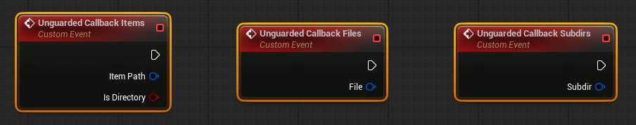
For now, let's say we just want to print the name of each file or directory. We'll start by defining our callback:
We're now ready to launch our traversal, choosing the desired traversal depth when we call the appropriate traversal function:
FCakeDir DirectoryGame{ TEXTVIEW("X:/game") };
auto PrintItemLeaf = [](FCakePath ItemPath, bool bIsDir) -> void
{
const FString Leaf { ItemPath.CloneLeafString() };
if (bIsDir)
{
UE_LOG(LogTemp, Warning, TEXT("Visited directory: [%s]"), *Leaf);
}
else
{
UE_LOG(LogTemp, Warning, TEXT("Visited file: [%s]"), *Leaf);
}
};
if (!DirectoryGame.TraverseItems(ECakePolicyOpDepth::Shallow, PrintItemLeaf))
{
UE_LOG(LogTemp, Error, TEXT("Unguarded item traveral failed to launch!"));
}
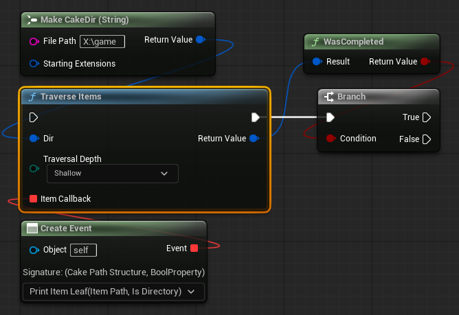
Guarded Traversals
Guarded Traversals are just like unguarded traversals, except the callers can terminate the traversal early if an error is encountered. Outside of this difference, the traversal's effect remains the same -- its goal is to visit all elements at the specified depth. Because the caller has gained some control over the traversal operation, we now must return an ECakeSignalGuarded signal type to indicate if the traversal is allowed to proceed.
The callback signatures for Guarded Traversals are described via the following TFunction template aliases:
/** Callback signature for a guarded item traversal. */
using FGuardedCbItem = TFunction< ECakeSignalGuarded(FCakePath Path, bool bIsDir) >;
/** Callback signature for a guarded file traversal. */
using FGuardedCbFile = TFunction< ECakeSignalGuarded(FCakeFile File) >;
/** Callback signature for a guarded subdirectory traversal. */
using FGuardedCbSubdir = TFunction< ECakeSignalGuarded(FCakeDir Subdir) >;
Starting with Guarded Traversals, our callbacks need to return signals that will control how the traversal operation will proceed after each step. Since we need to return values back to the traversal operation via our callback, we now can only use functions. Outside of that, the only thing that changes is the return type, all signatures remain exactly the same as with the Unguarded callbacks.
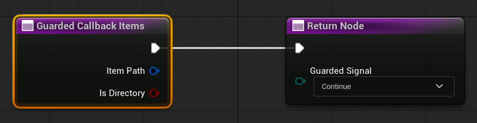
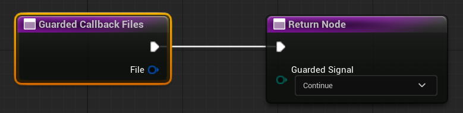
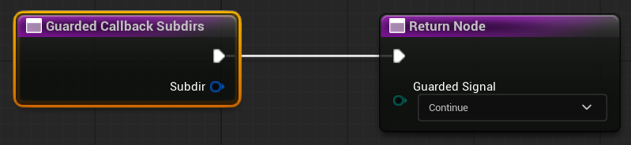
For this example, we'll use a guarded traversal over files to query the file size of each file, and abort the traversal if any of the query operations fail.
auto QueryFileSizeGuarded = [](FCakeFile File) -> ECakeSignalGuarded
{
TCakeOrderFile<int64> FileSizeOrder{ File.QueryFileSizeInBytes() };
if (FileSizeOrder.IsValid())
{
UE_LOG(LogTemp, Warning,
TEXT("[%s] ([%d] bytes)"),
*File.CloneFileName(),
*FileSizeOrder
);
return ECakeSignalGuarded::Continue;
}
return ECakeSignalGuarded::Abort;
};
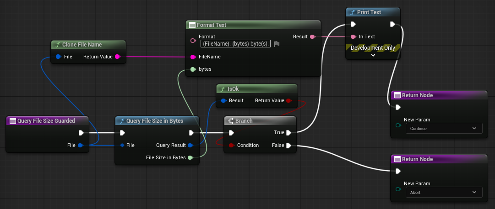
Using ECakeSignalGuarded is simple, we return the Continue signal when no errors are encountered which will advance the traversal to the next element, or we return the Abort signal when an error is encountered, which will stop the traversal at this step.
We're now ready to launch our traversal, choosing the desired traversal depth when we call the appropriate traversal function:
FCakeDir DirectoryGame{ TEXTVIEW("X:/game") };
auto QueryFileSizeGuarded = [](FCakeFile File) -> ECakeSignalGuarded
{
TCakeOrderFile<int64> FileSizeOrder{ File.QueryFileSizeInBytes() };
if (FileSizeOrder.IsValid())
{
UE_LOG(LogTemp, Warning,
TEXT("[%s] ([%d] bytes)"),
*File.CloneFileName(),
*FileSizeOrder
);
return ECakeSignalGuarded::Continue;
}
return ECakeSignalGuarded::Abort;
};
if (!DirectoryGame.TraverseGuardedFiles(ECakePolicyOpDepth::Shallow, QueryFileSizeGuarded))
{
UE_LOG(LogTemp, Error, TEXT("Failed to check all file sizes!"));
}
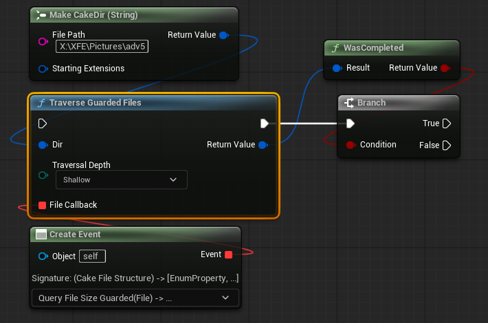
Note
For detailed guidance regarding traversal results and error handling, see this section.
Search Traversals
Search Traversals are an advanced traversal operation that allow callers to terminate a traversal as soon as they have accomplished a particular goal. They allow the traversal operation to be terminated early in either an error state or a success state, allowing for optimized performance in situations where an entire directory doesn't necessarily need to be traversed. A search traversal operation's goal is to satisfy the caller's search goal and then immediately terminate the traversal.
A search traversal can end in three states:
- Failure: All target elements were visited at the specified depth and the search goal was not met.
- Success: The search goal was met.
- Aborted: The search traversal was terminated due to an error.
Search traversal callbacks return ECakeSignalSearch signals in order to inform the traversal operation of the search's state at each step of the traversal.
The callback signatures for search traversals are described via the following TFunction template aliases:
/** Callback signature for a search item traversal. */
using FSearchCbItem = TFunction< ECakeSignalSearch(FCakePath Path, bool bIsDir) >;
/** Callback signature for a search file traversal. */
using FSearchCbFile = TFunction< ECakeSignalSearch(FCakeFile File) >;
/** Callback signature for a search subdirectory traversal. */
using FSearchCbSubdir = TFunction< ECakeSignalSearch(FCakeDir Subdir) >;
Similar to Guarded Traversals, we need to return a signal to the traversal operation. This means we can only change functions. All that changes is the signal type we need to return -- an ECakeSignalSearch, which will inform the traversal operation of the search's context.
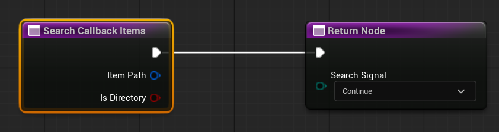
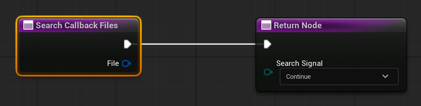
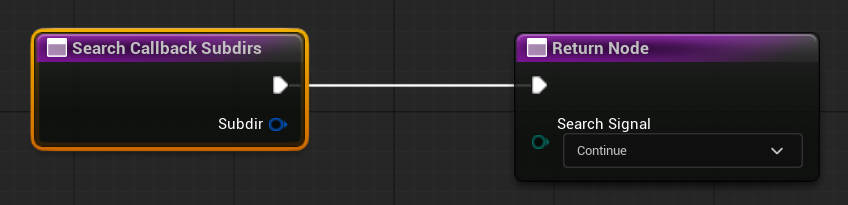
For this example, we'll use a search traversal to attempt to find a subdirectory named "config" contained somewhere within our source directory.
FCakeDir ConfigDir{};
FString ConfigName{ TEXT("config") };
auto ConfigDirSearch = [&ConfigDir, &ConfigName](FCakeDir Subdir) -> ECakeSignalSearch
{
if (Subdir.CloneDirName().Equals(ConfigName, ESearchCase::IgnoreCase))
{
ConfigDir = MoveTemp(Subdir);
return ECakeSignalSearch::Success;
}
return ECakeSignalSearch::Continue;
};
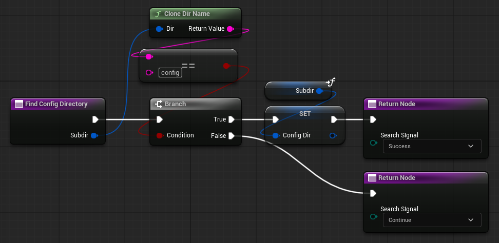
When using ECakeSignalSearch, we return Success when the search is satisfied and the traversal should end. In our case, this is when the subdirectory name matches "config". Otherwise, we return Continue, which means the search is not yet satisfied and the next element should be visited.
Note
We can also return an Abort signal just like a guarded traversal; however, it is not required. Since we don't have any IO failure or other critical errors that could occur within our callback, there is no need to return an Abort signal.
We're now ready to launch our traversal, choosing the desired traversal depth when we call the appropriate search traversal function:
FCakeDir DirectoryGame{ TEXTVIEW("X:/game") };
FCakeDir ConfigDir{};
FString ConfigName{ TEXT("config") };
auto ConfigDirSearch = [&ConfigDir, &ConfigName](FCakeDir Subdir) -> ECakeSignalSearch
{
if (Subdir.CloneDirName().Equals(ConfigName, ESearchCase::IgnoreCase))
{
ConfigDir = MoveTemp(Subdir);
return ECakeSignalSearch::Success;
}
return ECakeSignalSearch::Continue;
};
if (DirectoryGame.TraverseSearchSubdirs(ECakePolicyOpDepth::Deep, ConfigDirSearch))
{
UE_LOG(LogTemp, Warning,
TEXT("Found config at path: [%s]"),
*ConfigDir.GetPathString()
);
}
else
{
UE_LOG(LogTemp, Warning, TEXT("No config directory was found!"));
}
The result from a search traversal will only return true if the search was successful, so we can branch on the result and safely use ConfigDir when it returns true. This is the most basic way to use the results from a search traversal, please see traversal error handling for a more detailed look at how to work with search traversal results.
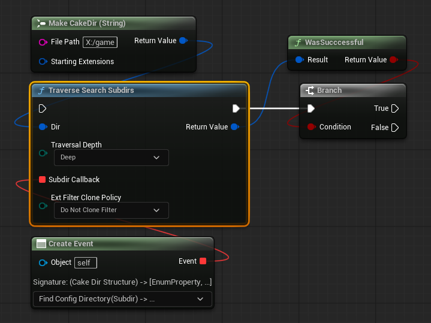
Filtered Traversals
Filtered traversals are a special kind of traversal that only works with files and uses the CakeDir object's file extension filter to select which files to visit. Every style has a files function that has the suffix WithFilter:
TraverseFilesWithFilterTraverseGuardedFilesWithFilterTraverseSearchFilesWithFilter
The default behavior of a filtered traversal is to visit any files whose file extensions are in the extension filter set. We can modify this default behavior through extra parameters, and we'll examine how in a bit.
Let's start with a basic example: we'll use the filter to visit only .txt files in a directory and read the text data. Since we're using a file IO operation during each traversal step, we should use a guarded traversal so we can respond to errors.
The native filtered traversal functions take one extra (optional) FCakeSettingsExtFilter settings struct. These settings control how the filter should be used to select which files to visit.
Unless you have changed the default policy values manually, the default behavior of the extension filter is to visit any files whose file extensions are in the extension filter set.
FCakeDir DirectoryGame{ FCakePath{TEXTVIEW("X:/game")}, TEXTVIEW("txt") };
auto ReadTextFiles = [](FCakeFile File) -> ECakeSignalGuarded
{
TCakeOrderFile<FString> ReadOrder{ File.ReadTextFile() };
if (ReadOrder.IsValid())
{
UE_LOG(LogTemp, Warning, TEXT("[%s]: [%s]"), *File.CloneFileName(), **ReadOrder);
return ECakeSignalGuarded::Continue;
}
return ECakeSignalGuarded::Abort;
};
if (!DirectoryGame.TraverseGuardedFilesWithFilter(
ECakePolicyOpDepth::Deep, ReadTextFiles))
{
UE_LOG(LogTemp, Error, TEXT("An error occurred while reading the text files."));
}
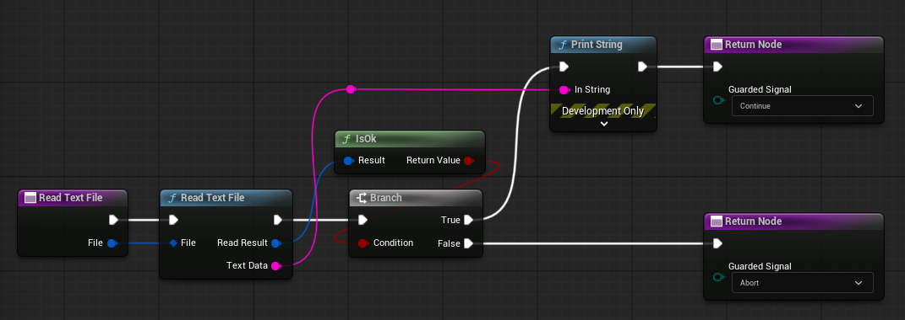
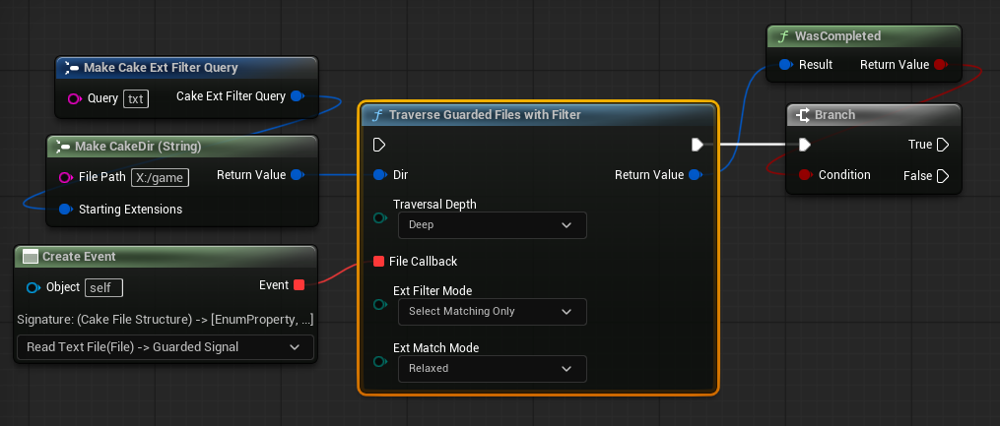
We can customize which files should be visited via the filter settings parameters. In this next example, we'll invert the filter logic so that our traversal skips any files whose extensions are in the extension set. For this example, we'll collect all files from a target build directory, ignoring any build artifacts that we don't care about. Since we want all files in the directory and we are just going to be adding CakeFile objects to an array within the callback, we don't need any error handling, so we can just use a unguarded traversal. Note how simple our callback implementation is -- since the filter is being used to exclude build artifacts, we know that any files that we receive are files we are interested in using, so all we need to do is just add each file to the array. This is the major benefit of using filtered traversals: we can focus entirely on operations involving files of interest, and we can delegate the filtering logic boilerplate to the traversal operation.
FCakeDir DirectoryGame{
FCakePath{ TEXTVIEW("X:/game/build/win64") },
TEXTVIEW("bin | obj | rsp | pdb")
};
TArray<FCakeFile> FilesOfInterest{};
auto GatherFiles = [&FilesOfInterest](FCakeFile File) -> void
{
FilesOfInterest.Emplace(MoveTemp(File));
};
if (!DirectoryGame.TraverseFilesWithFilter(
ECakePolicyOpDepth::Deep,
GatherFiles,
{ .FilterMode=ECakePolicyExtFilterMode::ExcludeMatching }
))
{
UE_LOG(LogTemp, Error, TEXT("An error occurred while reading the text files."));
}
else
{
for (const FCakeFile& File : FilesOfInterest)
{
UE_LOG(LogTemp, Warning,
TEXT("Doing work with file: [%s]"),
*File.CloneFileName()
);
// ... do some work
}
}
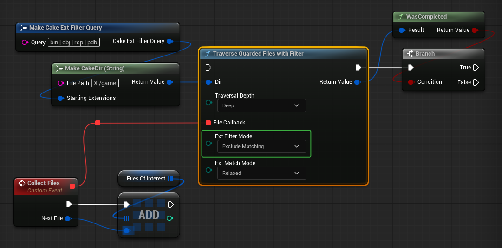
Advanced Usage
Checking if a Directory Contains Elements
To check if a directory contains any items, files, or subdirectories, we can use the ContainsAny family of functions, which all return a bool that is true if the directory contains at least one element, false otherwise. We can also use a filtered version when checking for files.
FCakeDir DirectoryGame{ FCakePath{TEXTVIEW("X:/game")}, TEXTVIEW("txt") };
const bool bHasAnyItems { DirectoryGame.ContainsAnyItems() };
const bool bHasAnyFiles { DirectoryGame.ContainsAnyFiles() };
const bool bHasAnyTextFiles{ DirectoryGame.ContainsAnyFilesWithFilter() };
const bool bHasAnySubdirs { DirectoryGame.ContainsAnySubdirs() };
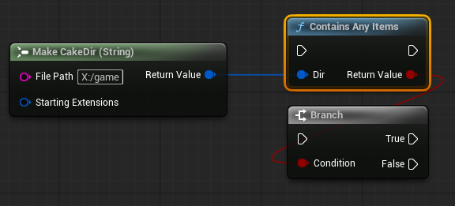
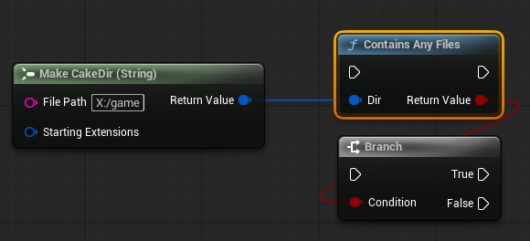
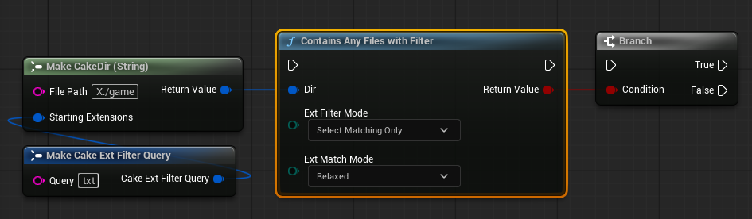
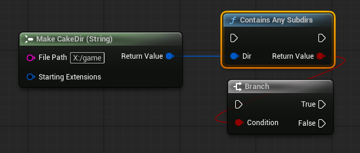
Advanced Clone Functions
CloneWithNewPath
This function is meant to be used when we want to copy the extension filter of a preexisting CakeDir object but use a different directory path. We merely need to submit the CakePath object that represents the new path the cloned object should have, and the extension filter will be copied for us.
The returned CakeDir object will hold the new path Y:/game/cake-arena/win64, but its extension filter will contain one extension .txt, just like the source directory.
CloneWithNewParent
Sometimes we might want to clone a CakeDir object and just change its parent path. CloneWithNewParent allows us to submit a new CakePath object that represents the parent, and it will return a CakeDir that has the new parent, but maintains the same directory name as the source CakeDir object. We can control whether the source CakeDir's extension filter should be copied as well via an
ExtFilterClone
policy argument, which by default will copy the extension filter.
FCakeDir DirectoryGame{ FCakePath{TEXTVIEW("X:/game/build/win64")}, TEXTVIEW("txt") };
FCakePath OtherParent { TEXTVIEW("Y:/archive/build") };
FCakeDir OtherGameDir { DirectoryGame.CloneWithNewParent(OtherParent) };
// Path: "Y:/archive/build/win64
// Ext Filter: [".txt"]
FCakeDir OtherGameDirNoFilter{
DirectoryGame.CloneWithNewParent(OtherParent, ECakePolicyExtFilterClone::DoNotCloneFilter)
};
// Path: "Y:/archive/build/win64
// Ext Filter: []
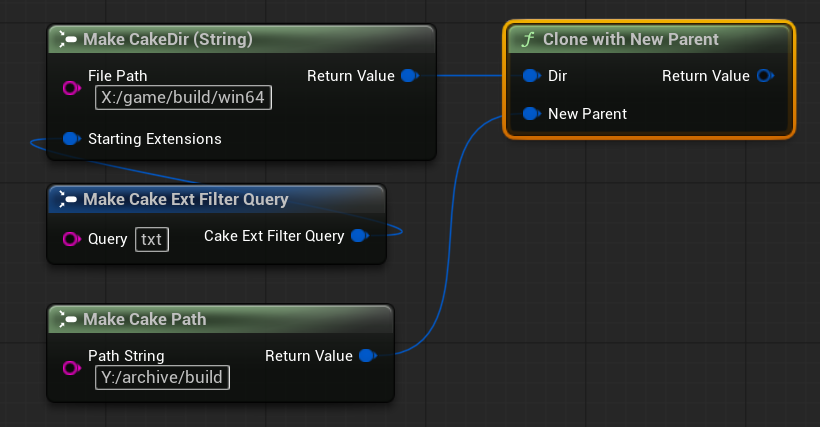
The cloned directory will hold the path: Y:/archive/build/win64.
Building Child Items
We can easily build CakePaths, CakeFiles, and CakeDirs that are parented under another CakeDir's directory path with the BuildChild family of functions. These are convenience functions meant to be used when a caller simply wants to create a child item without having to create any intermediate objects (e.g., the CakePath for a subsequent CakeFile).
BuildChildPath
To build CakePath objects that are automatically parented under a CakeDir's directory path, we use BuildChildPath, passing the desired relative path string:
In the example above, the returned CakePath's path will be X:/cake-arena/data/assets.
BuildChildFile
To build CakeFile objects whose file paths are automatically parented under a CakeDir's directory path, we use BuildChildFile, passing the desired relative file path string:
In the example above, the returned CakeFile's file path will be X:/cake-arena/items/health-potion.dat.
BuildChildDir
To build CakeDir objects whose directory paths are automatically parented under a CakeDir's directory path, we use BuildChildDir, passing the desired relative directory path string:
In the example above, the returned CakeDir's directory path will be X:/cake-arena/items.
We can also use the ExtFilterClone parameter to control whether or not the child directory should copy the parent directory's file extension filter.